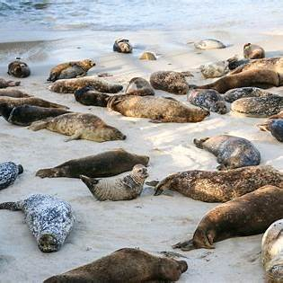
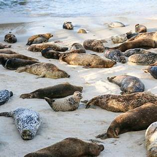
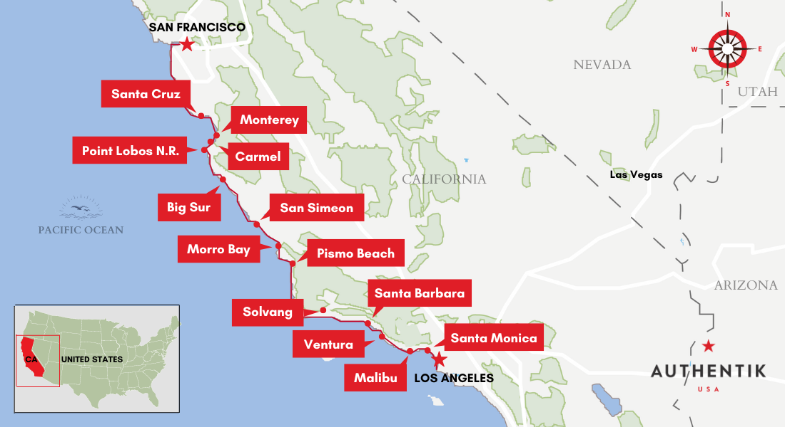

---
title: "Planning a California Road Trip"
description: "From the Bay to L.A. with Help from an LLM"
author: "Caroline Cummings"
date: "11/12/2025"
categories:
- ChatGPT 5
- travel
---I’m heading out on a road trip with a local Californian: I land in the Bay Area (SFO) on December 9, and we will be leaving from there on the 10th. We’ll need to be at Los Angeles International Airport (LAX) by about 9 a.m. on December 17. We’re ready for adventure and open to sleeping in the car for a couple of nights (if safe) and finding some budget-friendly stays along the way. We also want to squeeze in a day in San Diego and will stay with family in Oxnard, CA for a night or two.
I used ChatGPT to help me plan the route, stops, and lodging options. Here’s how it went:
User Prompt:
I’m planning a road trip in California: I go to SFO in California on December 9th and will be leaving from the Bay on December 10th. We need to be at LAX airport by around 9am on December 17th. I’ll be traveling with one other person. We are willing to sleep in the car for a couple of nights (if the area is safe), but we’d also like to find relatively cheap places to stay overnight along the way. We also want to include a day-visit to San Diego if feasible, and we’ll stay for a night or 2 with family in Oxnard, CA. Please help me plan the route, suggest where to stop each night, safe car-sleep or cheap lodging tips, and how to budget for accommodation. Also highlight how to prompt you (the LLM) to get best results for road-trip planning. ChatGPT Response:
The LLM gave me some images to start:
 

Then outlined the trip it had planned:
quick overview (route & key notes)
- Route shape: Bay Area → Monterey/Carmel (scenic stop) → US-101 via San Luis Obispo → Santa Barbara → Oxnard (family nights) → Los Angeles → San Diego day-trip → back to LA (sleep near LAX on 12/16).
- Big Sur caution: Highway 1 through Big Sur still has long-term closures; plan to enjoy the northern Big Sur viewpoints from Carmel/Monterey, then cut back to US-101 for the through-drive south. Always check Caltrans trip-day status. (SFGATE)
- Car-sleep rules: CA rest areas allow up to 8 hours; camping is prohibited. Look for posted “8 HOUR PARKING” signs (Caltrans/MUTCD). (Legal Information Institute)
- Walmart overnights: Allowed case-by-case by store manager (varies by city ordinances). Ask the specific store. (DAT)
- Train option for San Diego: If you don’t want to fight I-5 traffic, the Amtrak Pacific Surfliner runs frequent LA↔︎SD trains (walkable stations). (Amtrak)
day-by-day (Dec 9–17)
Dec 9 – Arrive SFO Crash wherever you’re staying in the Bay. If you want a budget SF option night-of: Hostelling International (dorms/private). (HI USA)
Dec 10 – Bay Area → Monterey/Carmel → San Luis Obispo/Pismo (sleep)
Morning: Drive HWY-1 to Carmel, Point Lobos pull-offs, Bixby vista if open from the north (turn around before closures), then hop to US-101 via Salinas/Prunedale. (SFGATE)
Sleep (choose one):
Dec 11 – SLO/Pismo → Santa Barbara → Oxnard (family)
- Roll the coast on US-101. Afternoon in Santa Barbara; sunset in Channel Islands Harbor after you land in Oxnard. (channelislandsharbor.org)
- Sleep: with family (1 of 1–2 free nights).
Dec 12 – Oxnard (family day)
- Options: Harbor walk, kayak, or consider a Channel Islands boat if seas/coast weather look good (Island Packers runs park/ferry & wildlife trips). (Island Packers)
- Sleep: with family (2 of 2 free nights, or just 1 if you prefer more LA time).
Dec 13 – Oxnard → Los Angeles (sleep)
- Short hop. Explore LA neighborhoods or beaches.
- Sleep: budget motel/hostel in LA or a permitted rest area stop along a freeway outside dense neighborhoods if you want a second car-sleep night (observe posted limits). (Legal Information Institute)
Dec 14 – LA → San Diego (sleep in SD or return to LA) Two good ways:
- Drive I-5 early (2–3 hrs off-peak), or
- Train Pacific Surfliner from LA Union Station → San Diego (walkable to transit/Balboa Park connections). (Amtrak)
- SD highlights for a single day: La Jolla Cove (sea lions/seals), Balboa Park, Old Town. (La Jolla is a protected area; keep a respectful distance from wildlife.) (Tripadvisor)
- Sleep: Either inexpensive SD hostel/motel or back in LA (see budget section sources). (expedia)
Dec 15 – Back to LA (if you slept in SD)
- Extra LA sightseeing or beach day.
- Sleep: LA area.
Dec 16 – Stage for LAX
- Keep this night near LAX/El Segundo so the 9am arrival on the 17th is easy. Choose a basic motel/airport hotel; car-sleep is not recommended near the airport due to city ordinances and parking enforcement.
- Sleep: LAX-area lodging.
Dec 17 – Fly from LAX ~9am
- Return the car and roll out.
where to sleep (mix & match)
Legal, safe car-sleep options (max 2 nights total like you wanted):
- Caltrans Rest Areas (8-hr limit; not camping): Pull in late, leave early, use well-lit, busy facilities. Example on your route: Camp Roberts on US-101. (Legal Information Institute)
- Some Walmarts allow overnight by manager permission—always ask inside; varies by city. (DAT)
Ultra-budget paid stays:
- Municipal campground: Veterans Memorial Park (Monterey) is first-come, first-served, inexpensive, and central for your 12/10 evening if you want a camp vibe. Vehicle length limits apply. (Monterey)
- Hostels (HI USA) in SF/LA/SD: dorm beds and some privates; great for meeting travelers. (HI USA)
- Motels (SLO/LA/SD): December is generally cheaper on the Central Coast (SLO) with frequent sub-$120 nights. (expedia)
ballpark lodging budget (for two)
You’ll likely cover 7 nights total (nights of 12/10–12/16), with 1–2 free in Oxnard family housing and up to 2 car-sleep nights. Here are two realistic mixes:
- Frugal mix: 2 car-sleep nights (free), 2 family nights (free), 3 paid nights @ ~$90–$140/room ⇒ $270–$420 + tax total. (SLO/LA winter prices often fall in this band.) (expedia)
- Comfort mix: 1 car-sleep night, 2 family nights, 4 paid nights @ ~$110–$160 ⇒ $440–$640 + tax.
(Hostel dorms can be $30–$60/pp; privates more. Great way to trim costs in SF/LA/SD.) (HI USA)
safety & logistics tips
- Check road status same-day (winter slides/repairs on Hwy 1 can change). Caltrans site/QuickMap are the source of truth. (California Road Information)
- Rest areas = “rest,” not camping. CA regs: no more than 8 hours in any 24-hour period. Move on after a night. (Legal Information Institute)
- Ask before parking overnight at private lots (Walmart, etc.); manager permission is key. (DAT)
- San Diego wildlife (La Jolla): observe from a distance; it’s a protected marine area. (Airial)
- Airport morning: Sleep within 15–20 minutes of LAX on 12/16, and return your car with a buffer.
optional add-ons if you have time
- Channel Islands outing from Oxnard (half- or full-day via Island Packers). Weather-dependent, magical. (Island Packers)
- Santa Barbara mission/shoreline walk en route.
- Pacific Surfliner for a chill, scenic San Diego day without LA freeways. (Amtrak)
My Thoughts on the Plan
I thought that Chat did a good job proposing an idea. It provided me a lot of information to think about for my planning and it was helpful that it provided specific links to go follow. I particularly liked the day-by-day break down part and the safety + logistics tips part. I was unaware of the policies surrounding sleeping at rest stops and in Walmart parking lots (which seems a little sketch). I forgot to tell Chat that we would have our own car and would not have to rent. I wanted to get a more succinct plan so I asked it to make a detailed day-by-day itinerary
ChatGPT Response
🌴 California Road Trip Itinerary (Dec 9 – 17, 2025)
| Date | Route / Stay | Driving Time | Key Stops & Activities | Lodging / Notes |
|---|---|---|---|---|
| Dec 9 (Tue) | Arrive SFO → Bay Area | — | Land, pick up rental, grab dinner in SF or Peninsula | Stay in SF/San Jose (Hostel or budget hotel $80–$120) |
| Dec 10 (Wed) | Bay Area → Monterey → San Luis Obispo/Pismo | 4–5 h | Scenic HWY-1 drive to Carmel, Point Lobos, Bixby Creek Bridge (north viewpoints only); cut to US-101 via Salinas | Sleep: Camp Roberts Rest Area (8 hr limit) or budget motel in SLO ($90–$120) |
| Dec 11 (Thu) | SLO/Pismo → Santa Barbara → Oxnard | 3 h | Explore downtown SLO, Santa Barbara Mission + beach walk; arrive in Oxnard evening | Stay with family (Oxnard – free) |
| Dec 12 (Fri) | Oxnard (day) | — | Relax with family, Channel Islands Harbor walk or Island Packers boat trip | Family stay (Oxnard) |
| Dec 13 (Sat) | Oxnard → Los Angeles | 1.5 h | Malibu coast drive, Santa Monica Pier, evening in LA downtown or Silver Lake | Budget motel or car-sleep (permitted area) ~$100 |
| Dec 14 (Sun) | LA → San Diego | 2.5–3 h | Drive or train to SD; visit La Jolla Cove, Balboa Park, Old Town | Hostel or budget hotel in SD ($90–$130) or return to LA |
| Dec 15 (Mon) | San Diego → LA (return) | 2.5–3 h | Morning coffee + beach walk in SD; drive back to LA midday to avoid traffic | Stay LA area (hostel/motel ~$110) |
| Dec 16 (Tue) | LA → LAX area prep | ≤ 1 h | Relax, pack, return rental car fuel topped-off | Stay near LAX (El Segundo/Inglewood motel $120 avg) |
| Dec 17 (Wed) | Fly out LAX by 9 a.m. | — | Arrive airport 6:45–7 a.m. for check-in | — |
ChatGPT Response:
🌴 California Road Trip Itinerary (Dec 9 – 17, 2025)
| Date | Route / Stay | Driving Time | Key Stops & Activities | Lodging / Notes |
|---|---|---|---|---|
| Dec 9 (Tue) | Arrive SFO → Bay Area | — | Land, pick up rental, grab dinner in SF or Peninsula | Stay in SF/San Jose (Hostel or budget hotel $80–$120) |
| Dec 10 (Wed) | Bay Area → Monterey → San Luis Obispo/Pismo | 4–5 h | Scenic HWY-1 drive to Carmel, Point Lobos, Bixby Creek Bridge (north viewpoints only); cut to US-101 via Salinas | Sleep: Camp Roberts Rest Area (8 hr limit) or budget motel in SLO ($90–$120) |
| Dec 11 (Thu) | SLO/Pismo → Santa Barbara → Oxnard | 3 h | Explore downtown SLO, Santa Barbara Mission + beach walk; arrive in Oxnard evening | Stay with family (Oxnard – free) |
| Dec 12 (Fri) | Oxnard (day) | — | Relax with family, Channel Islands Harbor walk or Island Packers boat trip | Family stay (Oxnard) |
| Dec 13 (Sat) | Oxnard → Los Angeles | 1.5 h | Malibu coast drive, Santa Monica Pier, evening in LA downtown or Silver Lake | Budget motel or car-sleep (permitted area) ~$100 |
| Dec 14 (Sun) | LA → San Diego | 2.5–3 h | Drive or train to SD; visit La Jolla Cove, Balboa Park, Old Town | Hostel or budget hotel in SD ($90–$130) or return to LA |
| Dec 15 (Mon) | San Diego → LA (return) | 2.5–3 h | Morning coffee + beach walk in SD; drive back to LA midday to avoid traffic | Stay LA area (hostel/motel ~$110) |
| Dec 16 (Tue) | LA → LAX area prep | ≤ 1 h | Relax, pack, return rental car fuel topped-off | Stay near LAX (El Segundo/Inglewood motel $120 avg) |
| Dec 17 (Wed) | Fly out LAX by 9 a.m. | — | Arrive airport 6:45–7 a.m. for check-in | — |
💸 Estimated Lodging Budget (for 2 people)
| Type | Nights | Cost per night | Est. Total |
|---|---|---|---|
| Family stay | 2 | Free | $0 |
| Car-sleep (rest area) | 1–2 | Free | $0 |
| Paid motels / hostels | 3–4 | $90–$130 | ≈ $350–$520 |
| Total ≈ $350–$520 + tax |
Final Thoughts
Why Using an LLM Helped
- Speed: Instead of manually digging route-blogs, lodging sites, and safe-sleep car tips, I got a structured plan in minutes.
- Flexibility: I can ask follow-ups (“What options under $80 night in Morro Bay?” “Which rest stops allow overnight car parking in Ventura county?”) and iterate.
- Customization: I told it my specific dates, number of people, tolerance for car-sleeping and budget. The response reflected my preferences.
- Prompt-ing clarity: By stating start date, end date, group size, willingness to sleep in car + lodging preference + budget, I gave the LLM the right parameters to generate a realistic plan.
I’m excited. This trip feels very doable with our timeline. There’s a mix of driving, exploring, rest, flexibility (car-sleep or motel), family time in Oxnard, and that extra special day in San Diego. Using ChatGPT to map out the plan saved me a ton of mental work and gave me a structure to build off of.
